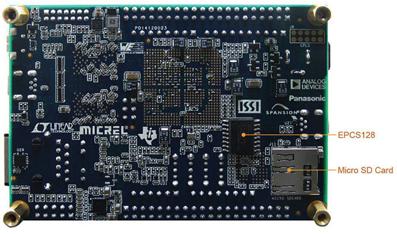
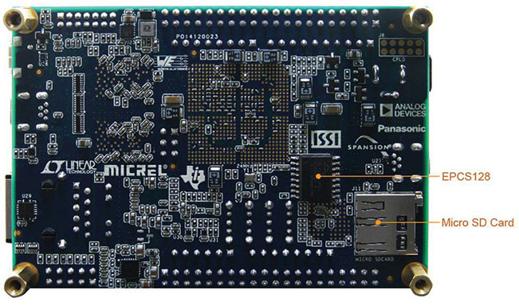

Welcome to the Atlas-SoC Software Evaluation Kit!
This kit is based on the Terasic DE0-Nano-SoC board, developed for the Altera University program. The board hardware is the same, but the embedded software and reference designs are different. If you plan to use this board in a classroom environment please click here. If, however, you wish to evaluate the Altera SoC software design tools and flow, read on . . . here are some things you can do with this kit:
Access technical information and resource links to accelerate the SoC learning curve.
Try it for yourself. Get hands-on experience developing embedded software using the Atlas-SoC board as your development system.
Take the next step. Download and install the development tools (hardware and software) on your PC or workstation. Learn about daughter cards, open source projects, and additional technical information available specifically for this board.
Before You Begin . . .
Learn About The Board
Block Diagram

Board Layout (Top)
Board Layout (Bottom)
 
Learn About The LEDs and Switch Settings
FPGA Configuration


Processor Reset


System LEDs


User Push Buttons, Slide Switches & LEDs


See What's Running On The SoC Device
SoC Device Configuration:
FPGA Hardware
- 32-bit FFT
- x2 DMA
- 4k SRAM buffer
- GPIO for LEDs, push buttons & slide switches
HPS I/O
- 32-bit DDR3 SDRAM
- x1 10/100/1000 Ethernet port
- x1 USB 2.0 OTG port
- SD Card I/F
- GPIO for LEDs & push buttons
- x1 UART for stdio
- x1 I2C for accelerometer
Embedded Software:
OS: Linux
- Kernel v3.10-LTSI
- Angstrom v2014.12 Yocto1.7
Why Use An SoC FPGA
Not sure why you might use an SoC FPGA?
Here are some resources that may help answer that question and, along the way, show you why this type of device may be just the answer for your next design:
Videos:
- EE Journal Chalktalk Tech Briefs With Amanda Dalton From Electronic Engineering Journal
- A Look Inside SoC FPGAs (Series) Featuring Jim Turley From Silicon Insider
White Papers:
Why Do I Need a Customizable ARM-based SoC?
A Look Inside:
SoC FPGA
Introduction
A Look Inside:
SoC FPGA
System Performance
A Look Inside:
SoC FPGA
Reliability & Flexibility
A Look Inside:
SoC FPGA
Cost, Power, Roadmap
A Look Inside:
SoC FPGA
Embedded Software
FPGA SoC Videos
Documentation & Technical Support
Tutorials, Workshops
& On-Line Training